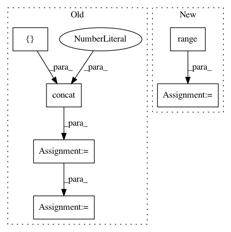

5e854f25098ca40a4ac80197607bf883feaeb375,research/object_detection/utils/learning_schedules.py,,manual_stepping,#Any#Any#Any#,109
Before Change
step_boundaries = tf.constant(boundaries, tf.int64)
learning_rates = tf.constant(rates, tf.float32)
unreached_boundaries = tf.reshape(
tf.where(tf.greater(step_boundaries, global_step)), [-1])
unreached_boundaries = tf.concat([unreached_boundaries, [len(boundaries)]], 0)
index = tf.reshape(tf.reduce_min(unreached_boundaries), [1])
return tf.reshape(tf.slice(learning_rates, index, [1]), [])
After Change
step_boundaries = tf.constant(boundaries, tf.int32)
num_boundaries = len(boundaries)
learning_rates = tf.constant(rates, tf.float32)
index = tf.reduce_min(
tf.where(
// Casting global step to tf.int32 is dangerous, but necessary to be
// compatible with TPU.
tf.greater(step_boundaries, tf.cast(global_step, tf.int32)),
tf.constant(range(num_boundaries), dtype=tf.int32),
tf.constant([num_boundaries] * num_boundaries, dtype=tf.int32)))
return tf.reduce_sum(learning_rates * tf.one_hot(index, len(rates),
dtype=tf.float32))
In pattern: SUPERPATTERN
Frequency: 3
Non-data size: 6
Instances
Project Name: tensorflow/models
Commit Name: 5e854f25098ca40a4ac80197607bf883feaeb375
Time: 2018-02-13
Author: lzc@google.com
File Name: research/object_detection/utils/learning_schedules.py
Class Name:
Method Name: manual_stepping
Project Name: tensorflow/agents
Commit Name: 982db1e3e4097b2fa2727bddf05307633dd6df83
Time: 2020-03-12
Author: no-reply@google.com
File Name: tf_agents/bandits/agents/utils.py
Class Name:
Method Name: build_laplacian_over_ordinal_integer_actions
Project Name: taehoonlee/tensornets
Commit Name: b9927f30cb9c92040c30d0fe8c735d8baea167b2
Time: 2019-03-13
Author: me@taehoonlee.com
File Name: tensornets/layers.py
Class Name:
Method Name: gconvbn